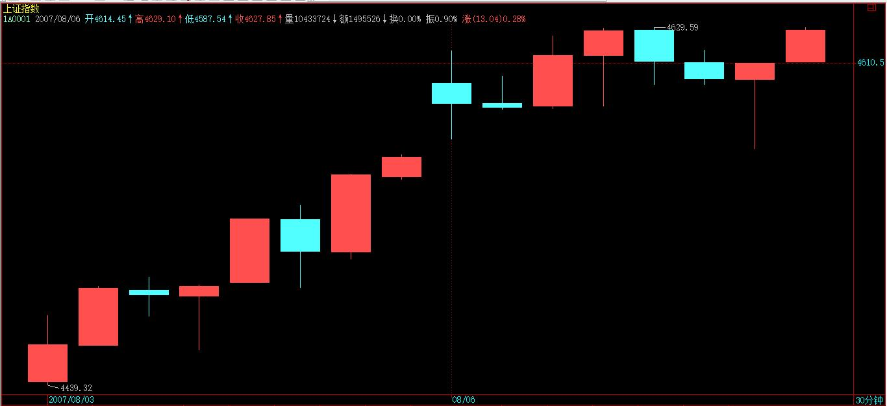
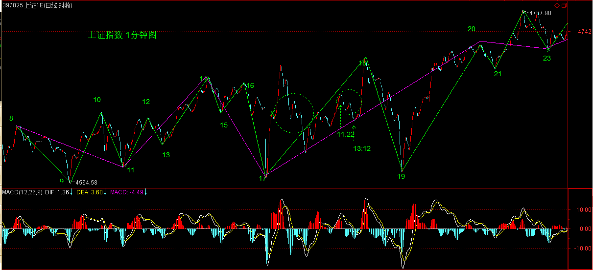

(2007-08-05 10:36:28)
下午要去小罗、亨利一番，然后还要去酒吧折腾折腾，所以先把课程放上来。
今天说说预测，何谓预测？一般的预测是什么把戏？而科学严密的预测究竟是怎样的，本ID的理论是如何成为最精确最当下预测的，这都要在这里说明。
真正的预测，就是不测而测。
当然，这和一般通常的预测不是一个概念。在通常预测概念的忽悠、毒害下，很多人那根爱预测之筋总爱不时不自主地晃动几下，这里也算给那些被预测毒害的人治疗治疗，也算死马当活马治一治了。
市场的所有走势，都是当下合力构成。例如，前几天，认沽权证突然停牌导致的走势，就是由于规则分力有了突发性改变当下构成的。
由于一般情况下，政策或规则的分力，至少在一个时间段内保持常量，所以，一般人就忘记、忽视其存在。
但无论是常量还是随着每笔成交变化的变量，合力都是当下构成的，常量的分力，用F(t)表示，只是表示其值是一个常量或者是一个分段式常量。对于任何一个具体的t来说，这和变化的分量在合成规则与合成的结果来说，没有任何的区别。
但这些常量的分力，并不是永恒的常量，往往是分段式的，其变化是有断裂点的，很多基本面上的分力，都有这个特点，这些断裂点，构成预测上的盲点。当然，进行基本面分析，对宏观面进行大面积的考察，可以尽量减少这些盲点，但不可能完全消除。这因素的存在，已使得所有一般意义上的精确预测可能变成一个笑话。【韶山映山红】基本面分析的一个特点：分力的变化有断裂点，能够破坏精确预测。★】
更重要的是，基本面上的因素，也是合力的结果。政治、经济等等方面，哪个不是合力的结果？现在的世界政治、经济格局，就是众多合力的结果，一个国家里的就更是这样了。
很多人一根筋思维，总是假设政策是一个上帝，是不需要合力的，里面没有各种利益的斗争，所有结果都如同一个预设的机器给出的。所有一般意义上精确预测的理论，实质上都是以类似的一根筋思维为前提的。
比前面这些更深刻的，站在哲学的角度，预测也是一个分力，就如同观察者本来就被假定在观察之中，所有观察的结果都和观察者相关、被观察者所干预，以观察者为前提，预测也是同样的方式介入到被预测的结果之中。正如同量子力学的测不准原理，任何关于预测的理论，其最大的原理就是测不准。
【韶山映山红】不确定性原理又称“测不准原理”、“不确定关系”，是量子力学的一个基本原理，由德国物理学家海森堡提出。“在位置被测定的一瞬，即当光子正被电子偏转时，电子的动量发生一个不连续的变化，因此，在确知电子位置的瞬间，关于它的动量我们就只能知道相应于其不连续变化的大小的程度。于是，位置测定得越准确，动量的测定就越不准确，反之亦然。”测不准原理代表了这个世界最基本的模糊性，不是有什么不可测的因素干扰，而是世界本身就不存在准确。】
有人可能在说，很多人都有预测准确的经历，这是为什么？
其实，这不过是一个概率事件。因为走势可以发生的情况，按任何标准来分类，其可能情况都是有限的。一般来说，就是三、四种情况。而喜欢预测游戏，到处宣布自己预测如何如何准的人比全世界正在被面首的人都多，瞎猫还能碰到死耗子，就算有人连续碰对了，也依然在概率的范围内，有什么大惊小怪的。而所有号称自己预测如何如何的人，不过都是玩如此的招数或被如此的招数玩而不自知，至于那些把烂的藏起来，只把忽悠对的到处晃悠，那就更等而下之了。
其实，预测一点都不神秘，甚至连某男都可胜任（注意，这涉及不可知事件预测，本ID对此的准确性没有任何信心）。所有预测的基础，就是分类，把所有可能的情况进行完全分类。
有人可能说，分类以后，把不可能的排除，最后一个结果就是精确的。这是脑子锈了的想法，任何的排除，等价于一次预测，每排除一个分类，按概率的乘法原则，就使得最后的所谓精确变得越不精确，最后还是逃不掉概率的套子。
对于预测分类的唯一正确原则就是不进行任何排除，而是要严格分清每种情况的边界条件。
任何的分类，其实都等价于一个分段函数，就是要把这分段函数的边界条件个确定清楚。
例如下面的函数：
f(X)=-1，X∈(-∞,0)，
f(X)=0，X=0，
f(X)=1，X∈(0，∞)
关键要搞清楚f(X)取某值时的X的范围，这个范围就是边界条件。
在走势的分类中，唯一可以确定的是不可能取负值，也就是从[0，∞）进行分类，把该区域分成按某种分类原则分为N个边界条件。
有人可能要说，股票怎么可能变到0？这有什么奇怪的，股票停了算什么？别说股票，钱都可以变成0，你说1950年时候的金元券值多少？当然，如果你的子子孙孙能把一张金元券守到宇宙爆炸的最后一刻，那时候，这金元券会值N元的，这个N，大概也会趋向一个恐怖数字的，那就等着吧。
不仅股票是废纸，本质上货币也是废纸，其所谓的价值区间和股票是一样的，0同样是可能的取值。甚至按最精确的理论来说，还可以取负值，例如，如果有某朝或某国政府规定，私藏前朝或别国钱钞股票的一律死罪，那你说这钱钞或股票是不是负值？至于具体股票变0的情况，在权证上就经常发生。
边界条件分段后，就要确定一旦发生哪种情况就如何操作，也就是把操作也同样给分段化了。然后，把所有情况交给市场本身，让市场自己去当下选择。
例如，前几天，本ID用前期两高点和10日线进行分类，那自然就把走势区间分类成跌破与不跌破两种。然后预先设定跌破该怎么干，不跌破该怎么干，如此而已。
这就是最本质的预测，不测而测，让市场自己去选择。最后市场选择了不跌破，那就继续持有。
有人说，万一他上去后又跌破怎么办？
这是典型的脑子水多瞎预测思维。任何一个市场的操作者，一定不能陷入这种无聊思维之中。
市场不跌破是一个事实，你的操作只能根据已经发生的事实来，如果跌破，那就等跌破成为事实再说，因此在本ID意义下的预测里，你已经把如果跌破的情况该干什么预设好了，这种情况没成为事实，就是另一种情况成为事实，那就该干什么干什么。【韶山映山红】趋势背驰必反弹。如果反弹一点点，然后又跌了怎么办？这一段正好可以回答。】
一般来说，喜欢预测的人，通常都是神经过敏，脑子水多，操作低下，喜欢忽悠之辈。那些从2000点就开始测顶的，如果说错一次割一块肉，现在都可以去当假冒羊蝎子了。【韶山映山红】缠师不只是黄油蟹，也有羊蝎子啊。】
股票是用来面首的，不面首股票，就被股票面首。面首股票，可不能光是忽悠，而是要实际操作。所有的操作，其实都是根据不同分段边界的一个结果，只是每个人的分段边界不同而已。
因此，问题不是去预测什么，而是确定分段边界。
例如，前两天用前期两高点分类有意义，现在再用，就没什么意义了，现在就可以完全用均线系统来分类，所以本ID就接着强调5日、5周、5月的原则。
有了分段的边界原则，按着操作就可以，还需要预测什么？又有什么可预测的？【韶山映山红】问题是，这么多的各种边界原则，怎么知道什么时候用哪个？这些和缠论的走势类型分析是什么关系？以后研究。★★★】
世界金融市场的历史一直在证明，真正成功的操作者，从来都不预测什么，即使在媒体上忽悠一下，也就是为了利用媒体。
真正的操作者，都有一套操作的原则，按照原则来，就是最好的预测。
那么，本ID理论中的分型、笔、线段、中枢、走势类型、买卖点等等，是不是预测呢？
是也不是。【韶山映山红】首先，是。然后，不是，不是别人那样纯粹的猜测。】
因为本质上本ID的理论，是最好的一套分段原则，这一套原则，可以随着市场的当下变化，随时给出分段的信号。
按照本ID理论来的，其实在任何级别都有一个永远的分段：X=买点，买入；X=卖点，卖出；X属于买卖点之间，就持有，而这持有的种类，如果前面买点，卖点没出现，就是股票，反之就是钱。
按照分段函数的方法，本ID的理论就有这样一个分段操作的最基本原则。
【韶山映山红】
f(X)=买，X=买点
f(X)=持股，X∈(买点，卖点)
f(X)=卖，X=卖点
f(X)=持币，X∈(卖点，买点) 】
因此，如果你真学习和按本ID的理论来操作，就无须考虑其他系统，或者说其他系统都只能是参考。
本ID解盘的时候，之所以经常说均线，高点连线之类的，只是为了照顾没开始学本ID理论的人，并不是本ID觉得那种分类有什么特殊的意义。
本ID的理论，任何时候都自然给出当下操作的分段函数，而且这种给出都是按级别来的，所以本ID反复强调，你先选择好自己的操作级别，否则，本来是大级别操作的，看到小级别的晃动也晃动起来，那是有毛病。【韶山映山红】低于操作级别的短差只能是部分仓位，即使Ｔ飞了，也不能动了底仓。】
给出分段函数，就是给出最精确的预测，所有的预测都是当下给出的，这才是真正的预测。
这种预测，不需要任何概率化的无聊玩意，也没有所谓预测成功的忽悠或兴奋。这种预测的成功每一当下都发生着，每一下都要忽悠兴奋一下，这人脑子早锈掉了。
所谓碧空过雁、绿水回风，哪个是尔本来面目？
参！
【韶山映山红】刑天-唐伯志的博客 】
(2006-08-18 09:46:34)
关于预测：预测就是你比别人看的更远
预测就是事前预言事物未来发展的状态和规模。
当代印度的智者讲过一个故事，我以为可以很好说明股票中的预测行为。
他说甲乙两个 人在同一地点等一个人，一个人在树的上面等，一个人在树下等。树上的人看到某人已经走过来了，而树下的人还看不到。树上的人告诉树下的人，某人将会在10分钟后到达。树下的人豪不惊讶，因为，他知道甲在树上已经看到了某人。
对树下的乙而言，甲是在预测。但对于甲而言他看到的是已经发生的事。
股票的预测和这个故事非常的类似。
可以预测股票未来可能的走势的人并不是在和虚无中的神灵对话，也不是靠批八字来进行判断。更不是什么邪灵附体。
他只是站在了更高处，他只是比你看的更远而已。
如何站到更高处？
在股票交易中有很多办法。爬树是一种方法，爬山也是一种方法，建立一所大厦站在大厦的最高一层也是一种方法。你可以选择其中的一个方法，在几种方法中选择一种你适合的方法。
但是注意，你不能也没有必要去创造一种适合你的方法----因为开创一种方法对于大多数人而言是危险的是需要付出大量的成本的而这些成本则是一般人难以承受的。所以，我们说寻找一种适合自己的方法必须有个前提，这个前提就是在有限的既有的方法中去选择而不是贸然去开创。
很多人在股票交易中亏损，伤痕累累，原因何在？
难道真的股票也有人性？难道股票真的只跟一般的散户交易者过意不去？答案显然是否定的。
亏损并不是只光顾穷人，统计数字表明即便在2000年的大牛市中依然有85%以上的交易者亏损，这个85%中包括百万富翁，包括坐庄者----那些融资数十亿的超级大亨。所以对于广大的中小投资者而言不要认为自己是必然的倒霉蛋。
那么为什么大家会普遍认为自己是最倒霉的呢？其实原因很简单。穷人比富人要多。通常而言在有1000个穷人的地方只有1个富人，所以，当我们受伤之后，我们很容易找到更多的受伤者，所以当我们受伤之后我们很容易找到更多的贫穷的受伤者。因为富人是少数，因为富人愿意把痛苦留在心里，因为富人因其富有而更孤独。因为孤独者的倾诉对象要比穷人少。既然倾诉的对象少，传播的渠道就少，这样，一个怪圈形成了。这就是在一次暴跌之后，让人感觉太多的穷人遭遇了不幸的原因。
市场其实非常的公平。让市场变得不公平的不是别人，更多的时候是交易者自己。
我们来看一下下面的图表：图1是1990年以来的一张大盘走势图。从这里我们可以看到明显的价格高峰 也可以看到非常清楚地价格低谷。如果我们在ABCDEFGHIJ位置买入然后在K、L处卖出，显然我们都是获利的。
是什么原因导致我们不敢或者不肯在ABCDEFGHIJ买入呢？或者是什么原因导致我们不肯或者不敢在K点、L点卖出呢？
针对这个问题，我曾在网络上向100名来自不同城市的交易者询问。他们的回答令人吃惊的一致。针对这个问题，我曾在网络上向100名来自不同城市的交易者询问。他们的回答令人吃惊的一致。
这就是恐惧。
恐惧：阻挡我们看得更远的障碍
我在某个位置买入后，我知道价格至少要走20%，可是3%的时候我就跑了。
庄家太狡猾，计划好持有5天两天就被震出去了，刚走，价格就暴涨。
太倒霉了，一荒就跑了，其实我知道这是震仓洗盘。
【韶山映山红】刑天-唐伯志的博客 】
(2006-08-18 09:47:30)
每天我几乎都会在不同的时间听到这样充满遗憾的抱怨，既然大家都知道恐惧是阻挡我们我们获取的利润的障碍，那么为什么不在最恐惧的时候继续坚持一下呢？
下面的故事或许可以给出我们的答案。
故事是这样的，某天一个蝎子要过河，就对身边不远的青蛙说，你过来我有事跟你商量。
青蛙：请说我听得清。
蝎子说：我想过到河对岸去，但我不会游泳，你背我过去吧。
青蛙说：背你过去不是问题，可我不会背你。
蝎子说：人们都说青蛙很仗义啊，怎么事到临头你却退缩了呢？
青蛙说：不是这样，背别的小动物可以，只要我可以胜任，但是背你不成。
蝎子：为什么？
青蛙：因为你有个毒钩子，如果我背你到河心，你蜇了我，我就要死翘翘了。
蝎子哈哈大笑：你弱智啊，你背我到河中间我蜇你，你死了我还能活吗？
青蛙一想也是，就背了蝎子。然而当他们游到河心的时候，青蛙突然感觉背上一阵疼痛，撕心裂肺，接着便四肢发麻。
青蛙用最后的力气问道：你想自杀？
蝎子：孙子才想自杀呢，我蜇你完全是出于下意识。说完两个小家伙就都沉入了河底。
在这个故事里，青蛙开始是对蝎子保持警惕的，换言之它对蝎子的行为是有预见性的。它预测到了蝎子行为将会导致的后果，但是我们看到结果它依然难逃厄运。
交易不是简单的预测，交易是对预测的管理。
预测管理是什么？预测管理包括三个层面：预测、执行预测结果、事后总结。
青蛙预测到了蝎子的行为会造成的后果。
但是青蛙没有坚持预测的结果，它很容易放弃了，放弃的理由很充分：任何动物都会珍惜自己的生命---蝎子是动物---蝎子也会珍惜自己的生命。结论：蝎子如果蜇我，它就会丧失生命，所以它出于珍爱自己的生命也不会蜇我，因此我可以背它。
青蛙的这一推理在逻辑上没有任何错误，但是它忘记了：逻辑是理性的表征，它只对理性负责。当蝎子的潜意识战胜了理性的时候，逻辑就失去了对行为的制约力。在市场中，亏损者几乎100%没有接受过系统的交易训练。交易对他们非常的陌生，这一点很像青蛙。青蛙明知道蝎子可以要它的命，却被蝎子的理由轻易说服。
亏损者同样知道，在一个陌生的市场中盲目操作的后果。但是，2者最终都放弃了正确的判断。只不过亏损者比青蛙更可悲，因为青蛙毕竟还是有一个看上去堂皇的理由。而亏损者几乎没有任何理由的相信自己可以在市场中一个自己根本不知道深浅的地方下注并断言自己可以获利。
我很熟悉市场啊！有人会理直气壮地告诉我。我懂得波浪理论也知道道氏理论对江恩理论和魔山理论也有充分的研究。这也是我经常听到的声音。但是他们忘记了所谓精通和充分的研究的结论不是自己下的，而是市场。
如果你不能在市场中稳定获利你所有的懂和研究都没有意义。因为市场在大多数情况下不会给你第2次机会。这绝不是耸人听闻，下面我将告诉你我一些切实的经验。
信心：市场中最珍贵的资源
没有什么比丧失信心更可怕的事情了。这是我从业15年的 切身经历得出的结论。业外人面对市场首先想到的可能是金钱。是的如果你没有钱你是无法开始
(2007-08-06 15:58:43)
正如这次在3600点突击时，本ID写了满江红，【韶山映山红】告全国散户、大股东、庄家、基金及管理层书 (2007-07-04 23:34:45) 以黄河名字展开的绝地反击 (2007-07-06 15:50:50)】上次突破3000点的总攻行情，本ID在3月19日写了“神州自有中天日，万国衣冠舞九韶，”时间上，回头一看，都是很是时间的。
在3月19日那篇文章里，本ID宣称“在总市值超越GDP之前谈论股市的泡沫是可笑的，在中国股市总市值超越其GDP之前，第一阶段行情不会结束。”现在，这个目标已经达到，中国股市的总市值已经达到GDP了。
本ID在文章里很明确指出，第一阶段“行情最主要体现在以权重股为代表的成分股上。”但，今天这样一个日子里，本ID必须宣布，成分股行情的泡沫化阶段正式开始。
GDP，就是整个股市市值波动的中枢，前面是恢复性上涨，恢复到这个中枢上来。而从今天开始，将是远离该中枢的泡沫化阶段。
一般来说，泡沫化阶段的行情，将逐步走向全面疯狂，大笨象们都可以跳出小步舞，疯狂的上涨将如瘟疫般蔓延。
这个阶段，可以很短暂、也可以延续相当时间。可以远离中枢30%，也可以远离300%，但最后的结果都是唯一的，回跌到中枢处。
所有如本ID般正在轿子上享受的，首先要在思想上明确这波行情的性质，但不用慌张，能在泡沫中安心享受，在泡沫最后一刻一脚把泡沫踢破，本来就是投机的好境界，好好享受，好好利用，别浪费了疯狂轿夫们的力气。
一般在这种泡沫化阶段，本ID的原则就是只坐轿子不动手。
本ID握有大量中字头的大盘股票，基本每一个中字带头的成分股票都有，这在3600点的时候，本ID专门说过的，等这泡沫化打到高潮时，这些都是很好的踢破泡沫的种子好选择。
其他就是原来的那十几、二十只成本为0的，这是作为所谓的二、三线股配置的。这些股票，反而有些会长线继续关注，因为第二阶段的成长股行情中，有些会成为种子选手。
本ID的仓位都是按20年的思路来建的，对有些股票，本ID绝对要搞他20年以上。
短线走势，看看下图就很明白，8-9形成的线段，和下面6-7的形成线段上类上涨走势，【韶山映山红】“线段上类上涨走势”是指5-6-7-8-9-10这一段，下图用紫色标出。这里说的8-9线段是下面我做的这个图的位置，不是现在缠师配图的位置。这篇博文发布于(2007-08-06 15:58:43)，而缠师现在的配图贴于（2007-08-06 16:49），因为缠师发文的时候配了一张图，然后发现同花顺软件里显示的图形不一样，所以又改图重新贴过。相关问答和缠师专门写的说明这件事的一篇博客文章，参见后面的笔记。】
当然，这个走势可以延续下去，直到形成新的1分钟中枢，但前提是后面的上攻不形成类背驰，【韶山映山红】这段文字是改图之后改写的，所以这个时候还没有形成1分钟中枢。】否则，将至少在目前位置形成一个1分钟级别的中枢震荡。【韶山映山红】后面的上攻不形成类背驰，这个走势就可以延续下去，直到形成新的1分钟中枢。如果后面的上攻形成类背驰，就在目前位置至少形成一个1分钟级别的中枢震荡，不排除在目前位置更大级别的中枢震荡的可能。】是否背驰，就是明后两天关注的重点。一旦背驰形成，那么一个大的震荡不可避免。【韶山映山红】下面是当时的5分钟和30分钟走势图。】
【韶山映山红】下面这个就是现在看到的缠师博客原文配图，贴于（2007-08-06 16:49），是修正后的版本。】

【韶山映山红】线段划分及机械操作法实例分析。
7-8，第一种情况，7底分型成立。7.1-7.2这里，红箭头的地方按缠师的图应该不成笔，所以用红箭头标记了一下。现在恢复的历史图可以成笔，7.1-7.2就可以成段。不同软件数据造成的这样的情况很多，缠师也有解释，大盘指数容易有这样的问题，具体股票稍微好一点，咱们知道就行了。2007.08.06开盘向上跳空缺口，因为本身就在向上段里，所以这里的7.3-7.4跳空不单独成段。在跳空缺口之后的7.4-7.5向下线段，缠师的图中间不成笔，所以只有一笔，不构成破坏。7.5不成底分型，线段向上继续延伸到7.6处。7.7一笔破坏，然后新高，所以线段向上继续延伸到8处。线段7-8在7.1就完成了，但一直没有破坏，所以延伸很长，7作为前面1分钟的三买，随后的7-8段上涨很诱人啊。7-8对5-6在8月3日就应该算是盘整背驰，8月6日开盘的跳空高开带来的刺激，破坏了背驰段，使走势在高位横盘，使得9并没有跌破前高6。
8-9，第一种情况，8顶分型成立。这里7-8段参与比较的是前高7.6点。8-9内部没有盘整背驰，9的急跌、急拉应该是很小级别的小转大。7-8对5-6没有盘整背驰，9没有跌破6，并且，9的急剧下跌也没有完成回补早盘的跳空缺口，反而使得这个缺口既是压力又是支撑了。
9-10，第一种情况，9底分型成立，线段9-10成立，10的具体位置看后面一天的走势。9的急跌、急拉，尾盘走平，意味着后续的继续震荡。】

个股方面，成分股的冲锋依然会继续，但二、三线股的行情将逐步加温。今天最大的问题就是，周末第三波人的宣传能力太差，确实是乌合之众，其他方面资源太少，使得被忽悠的第四波人的进入还没达到应有的程度，因此，这几天第三拨人如何在忽悠方面表演，可以继续看戏。如果第四拨人的进入速度太慢，那么大盘必然要背驰而震荡。目前外围股市腥风血雨，如果这两天能止，一定是第三、四拨人最大的利好，那就等着吧。
思考题：看这线段中的类背驰，是用1分钟图上的MACD还是5分钟图上的MACD辅助判断方便？【韶山映山红】这个时期的笔接近于早期的1分钟级别，这个时期的线段接近于早期的5分钟级别，所以下图可以显示，5-6-7-8这个线段类趋势，在1分钟图上已经有很多次的围绕0轴的上下波动反转，很多MACD红绿面积了，而5分钟图上只是一个向上回拉0轴，所以还是5分钟图上的MACD辅助判断背驰段更方便，然后在1分钟图上找具体的背驰点。】
本ID原想着以下大雨的名义而偷懒不去腐败，结果，去腐败的那区竟然没下雨，而本ID这区的雨也小了，看来没机会，只能先下，再见了。
评论的模版有点问题，各位如果看不到，请耐心等待，本ID对电脑不大熟悉。
以后不能马上看到新帖子的，请到所有文章里找，这样可以快点看到。
先下，再见。
2007-8-6 16:16
新浪网友
线段8-9的上段只有4根K线，对这笔存在疑惑，那位明白的同学能解释一下好吗？谢谢！！
2007-8-6 16:22
缠：下午好！
对你的分段有疑问，8-9，9-10中间都没有构成三笔怎么能算做线段呢？
2007-8-6 16:23
大道
小丸子 2007-08-06 16:23:33
缠：下午好！
对你的分段有疑问，8-9，9-10中间都没有构成三笔怎么能算做线段呢？
----------
同问，老大得8－9中间不构成1笔吧，老大是不是看错了
2007-8-6 16:33
新浪网友
缠老师，今天8-9段之间不构成1笔啊，8-9合起来才算1笔
晕。。。。。
2007-8-6 16:42
各位注意，本ID正在车上用手机上网。你们现在看到的，不是正确的版本，新浪对修改的版本有一个延迟，上面有些网友说的是对的，原来那8-9不是一笔。
2007-8-6 16:45
恰到好处
小丸子 2007-08-06 16:23:33
缠：下午好！
对你的分段有疑问，8-9，9-10中间都没有构成三笔怎么能算做线段呢？
--------
[匿名] 大道 2007-08-06 16:33:41
同问，老大得8－9中间不构成1笔吧，老大是不是看错了
---------
都刚好有5k线，没有什么可疑问的
2007-8-6 16:47
【韶山映山红】线段划分实例分析。缠师在这一课的上面这张配图贴于（2007-08-06 16:49），上面的问答都早于这个时间，而且这篇博文发布于更早的(2007-08-06 15:58:43)，所以推断，缠师应该是贴图之后又改图了，改的就是上面网友提问质疑的的8-9段，应该就是下图的7.4-7.5段，缠师曾经在那里标记8-9。现在看到的8-9已经在新位置。】

(2007-08-06 22:56:55)
一酒一诗，人间乐事，酒无诗俗，诗无酒滞，三十载陈酿今宵尽，化作新诗四十言。
席间口占
缠中说禅
红尘多市易
吾辈少经营
偶得天真句
长留快活名
衔杯纵天地
仗剑入阴晴
时上孤峰坐
相看心月明
今天这雨下的不是地方，停得不是时候，最后换来一首五律，也算这腐败没白腐败。本ID三教九流都交往，难免腐败活动多。本周还有一个法国人的腐败活动在君悦，白酒是喝不上了。喝红酒没有任何写古诗的感觉，古诗总是白酒的。
今天走的时候发现小丸子、大道等指出原来的分段有问题，因为本ID平时是用别的系统，写帖子才用同花顺，没注意这两个系统数据上的细微差别，就对着标上了。【韶山映山红】缠师博客的贴图估计也是同花顺做的，数据记录和处理的细节问题上，和我们多数人使用的券商提供的通达信系统有出入。】仔细检查同花顺系统里的数据，确实原来的分段有问题，所以马上改了，然后在车上还上来打了一个招呼。新浪的刷新似乎很慢，一般本ID发完帖子，出来也看不到自己发的帖子，要等上一阵，但在“我的所有文章”里能马上看到，只是在首页以及最新文章列表不显示，不知道各位是否也有这个问题。
刚才回来看到有人说别的软件和同花顺的数据不同，那不算的一笔在别的软件上是一笔。这个问题其实很正常，在课程里本ID已经说过，每个软件对数据的反应或处理可能都有点不同，所以，数据有差异是很正常的。这就像同样倍数的显微镜，即使同一厂家都不可能绝对一样。所以，看的时候，坚持用同一显微镜就可以。本ID看盘时用的软件和同花顺不同，以后也注意点，不能照抄过来。但这些细微的地方，并不大影响整体的判断。而且这个分段，比原来的更简单清晰，更美。
因此，各位必须注意，在一个具体的分析中，一定要坚持用同一套软件的同一个数据源，这样，数据的连续性是保持在同一规范下的。不同软件的数据不同导致的不同划分，不会实质影响大的级别划分，站在实际操作层面，至少要在1分钟级别上讨论操作问题，所以这样的测量误差，是在可接受范围内的。测量误差，是不影响理论的统一性与严谨性的。
那么，这样的分歧，究竟有多细微的程度，各位可以看下图。
关键是绿箭头指着的两个K线，第一根范围是[4594.91，4597.57],第二根范围是[4595.19，4597.44]，由于第一根是最高收的，而4597.57与4597.44相差极为细微，所以可能就是0.1秒的数据收集差异，就导致在同花顺中的包含关系，在别的软件中就是第二根的高点比第一根的高一点点，就不是包含关系了，第二根才是分型的顶，这样，笔自然就成立了。如果这里的笔成立，那么整个分段就有一定的变化了。
【韶山映山红】缠师的软件，开盘竞价真的有一根Ｋ线啊。】
【韶山映山红】用通达信的数据恢复案发现场，绿色箭头处的笔成立，但是因为第二种情况没有形成底分型，所以这里的线段也是不成立。】
不过，这并不实质影响整个走势的分析，由于各位也应该明白，为什么在实际的分类中，必须要从分型和笔开始，最后由线段构成最小级别的中枢，其中一个原因，就是这样，到了最小级别的中枢的层次，这种微小测量误差造成的差异就可以尽量地抹平了。而到了更大级别的中枢，这些就不再存在。当然，这不是分型、笔、线段的主要功用，但也是其中之一。
这件事情，可以给出一个结论：本ID的理论是可以进行最精确的研究的，而且这种研究是绝对科学客观的，只和分析的具体图有关，只要是同一个软件的同一张图，就有绝对唯一的答案，在这个答案面前，无论是谁都一样平等。并不因为本ID研究出了这理论，本ID就有任何权威，在理论面前，人人一律平等，本ID也有出错的时候，但本ID的理论是不会错的，结论是唯一客观的，这叫依法不依人。
对任何理论，必须有依法不依人的最基本前提，本ID的理论之所以客观准确，并不是因为本ID的原因，而是该理论是实际走势最可能客观的反映，无关任何人，不管他喜欢不喜欢本ID本人，但只要在市场中，就被本ID的理论所覆盖。就如同一个在欧得里德空间里的人，无论他对180如何厌恶，但任何一个他能测量的三角形，就永远用180去折磨他，无处可逃。本ID的理论也如此，只要你在市场中，无论你知道不知道，喜欢不喜欢，你都无处可逃。
有网友问图怎么才能看清楚，本ID的电脑水平基本在打字阶段，但这个问题还是能回答一下的。请对着图按右键，然后打开属性把地址复制下来在网上打开，就能看到清晰的大图。本ID说电脑，纯粹是胡闹，各位有更好的办法，请提供。
最后给小丸子、大道等人一人一朵大红花。
先下，再见。
(2007-08-07 12:55:57)
对不起，有朋自远方来，收盘后马上要去接待一下，晚上11点以后才解盘，请原谅。
(2007-08-07 22:18:38)
对不起，现在才发帖子，今天其他内容的帖子没法写，只能说说今天的大盘。
显然，8-11已经极为标准地形成1分钟中枢，11-13可以看成该中枢的一个延伸。而13-14，这个对中枢的离开后形成14-15的回抽，构成1分钟中枢的类第三类买点。【韶山映山红】1分钟中枢8-11的13-14线段离开、14-15线段回踩，构成1分钟中枢的线段第三类买点。注意：类第三类买点。】
（严格来说，一个线段是不能构成买点的，只能是一个类买点，因为在这种理论前提下，1分钟中枢是最小级别，而最小级别的走势，必须至少包含一个1分钟中枢，因此说1分钟的第三类买点，只是类比地把线段当成了1分钟的次级别，但这只是类比说法，在严格的理论上，不能这样认为。）【韶山映山红】从这个角度说，1分钟中枢没有正式的第三类买卖点，1分钟走势类型没有次级别。线段不是1分钟的次级别，那么，笔也不是线段的次级别。★★】
由于收盘，使得16开始的17段走势是否完成，无从判断，【韶山映山红】第一种情况，但是第三笔还没有新低。】因此，明天一大早的走势就是决定该线段结束的位置，如果在图中10之下（也就是4645点下），【韶山映山红】按照现在恢复的历史数据，15点已经跌破10点，宣告扩张了。】那么将成一个5分钟的中枢，（8-11）+（11-14）+（14-17）。【韶山映山红】这里走势到13时，11-13是中枢8-9-10-11的延伸，然后中枢扩张的时候，11-13参与第二个1分钟中枢的组合。】
注意，一定要注意，一般来说，而由于第三类买点后并不必然导致上涨的延续，而是还有第二种选择，就是形成更大级别，也就是5分钟级别的中枢，而一般来说，在走势上，第一个中枢的第三类买点能形成上涨的概率比第二个中枢的要大多了，对于上涨中第二个中枢以后的第三类买点，其后形成上涨继续的概率越来越小，也就是说，这些第三类买点的参与价值越来越小。站在实质操作中，在第一个中枢已经买了，根本没必须等到第二个以后中枢的第三类买点才介入，那是脑子反应慢的表现。【韶山映山红】这时候的第一个中枢是2-3-4-5，相应的线段三买是7。】
因此，无论明天开盘后那线段走成怎样，连超短线的介入价值都不高，典型的刀口舔血，【韶山映山红】三买可能扩张，尤其是趋势第二个中枢的三买。】明天开始，要关注的反而是因迎奥运一周年而延迟的震荡只是延迟了，但延迟不等于消除了，要发生的一定要发生，【韶山映山红】为什么要延迟？★以后研究。】昨天留下的两点缺口，也构成技术的吸引力，【韶山映山红】第三个震荡的理由。】因此，对于实际操作来说，如何应付好这震荡才是首要关注的事情。
当然，不排除明天出于某种原因有护盘力量使得这震荡被减震了，【韶山映山红】某种原因的护盘力量？★以后研究。】但周四、五，依然有极大的可能补回来。【韶山映山红】“但延迟不等于消除了，要发生的一定要发生，”】
技术上，4500点突破后，还没有一次有力度的震荡去确认突破的有效，一般来说，这种程序是少不了的，人为因素，最多用时间换空间，但能否实现，那还两说呢。【韶山映山红】能否实现有效突破，还两说。】
个股方面，本ID让各位来北京旅游，这几天已足够热情了，现在，短线也没有任何参与价值了，该股，是本ID的中线股票，来回折腾到2008，是必然的，但并不意味着就永远不回杀了。
【韶山映山红】000802北京旅游，2014.10.24变更为北京文化。】

至于那等比，本ID一早就断言，等真启动的时候，肯定都是所有人拿不住的时候。【韶山映山红】等比数列，指的是600139绵阳高新，2007-04-11变更为*ST绵高，2009-06-04变更为西部资源。】

算了，这些小盘股，不会让太多人获利，就那么点筹码，还不够塞牙缝的，千万别追高了，这种小盘股，追的人一多，马上又是一个灾难。
大资金有什么优势？大资金的优势就是可以在一股票上耗上一年半载还能把成本给搞没了，而小资金，没必要把时间浪费其中，有些钱不是和任何人都有缘的。
本ID从3600点开始买股票，只和国资委保持一致，只买中字头，这可在当时暗示过了。最近中船、中铝之类发疯，可别以为是真疯了，当然，这类股票最近都涨多了，就别买了，欣赏吧，顺便去想想国资委为什么前段时间出那减持的规定吧。【韶山映山红】为什么？什么样的减持规定？★以后研究。】
对中字头的，本ID只说了一个，原因是那价位低，对于散户合适点。现在走得怎么样，各位也看到了。不温不火，就已经从7元多快到12元了，这就像去年12底，本ID在6元让各位买那只药一样，都是送一个大包子给有各位，让各位挣点学课程的学费。
那药，可是本ID准备搞20年的股票，为什么？华润把万科搞到中国老大，为什么不能把药搞到世界老大？现在20元，还S股，本ID 6、7元大力抢入的成本早就0了N个月了，不搞他20年怎么对得起自己？
现在，本ID对这股票的要求很低，保持0成本，一年增加1到2倍的筹码，别人挣钱，本ID挣筹码。
至于那只比三一成本低多的股票，也从7元跑到10元了，这股票基本面有不确定的地方，高了就别追了，对这股票，本ID的信心可不大，只是如打家劫舍的，劫他一票而已。【韶山映山红】600375星马汽车。现在的华菱星马。】
二、三线股会逐步苏醒，但成分股的疯狂会直到泡沫破裂结束第一阶段的行情。
不说了，累了，上面的后面关于个股的都是梦话，休息。
先下，再见。
【韶山映山红】线段划分实例分析。
9-10，2007.08.07早盘向上高开的跳空缺口，所在段是向上的，而且已经成立了，所以这个向上跳空也是顺势的，不单独成段。9-10内部笔盘整背驰，早盘的高开低走促成了1分钟中枢8-11的形成。
10-11，前面线段有没有跳空，10.1都是第一种情况，10顶分型成立。10-11内部中枢没有盘整背驰，11急跌急拉的很小级别小转大。9-10盘整背驰，11没有新低，意味着下跌力量的衰竭。
11-12，第一种情况，11底分型成立。这里比较10.1处。12没有新高，内部盘整背驰。中枢继续盘整震荡。
12-13，第一种情况，12顶分型成立。12-13内部没有盘整背驰，13小级别背驰。13没有跌破8-11中枢的中位线，意味着下一线段很可能成为中枢离开段。
13-14，第二种情况，14顶分型成立。13-14线段类上涨，内部盘整背驰。13-14对11-12没有盘整背驰，但对中枢8-11有离开段的盘整背驰，所以15跌破中枢高点10，没有跌破前高12，很正常。
14-15，第一种情况，14顶分型成立。14-15内部没有盘整背驰。15急跌急拉，小转大。15跌破中枢高点、没有跌破前高，成为中枢8-11的三买。
15-16，第一种情况，15底分型成立。15-16内部盘整背驰。16没有新高，意味着将回跌形成中枢14-17，使得前面中枢8-11扩张升级。
16-17，第一种情况笔破坏，是否线段破坏还要看8月8日。
【韶山映山红】放大缠师原图的14-15-16局部图，可以看到，14-15在老笔的情况下很可能不成段，新笔没问题。】
对不起，图弄错了，帖子也搞错了，等15分钟出来的才是真的，
2007-8-7 22:23
新浪改版？本ID这里都乱套了，找不到编辑，刚才把一个错帖子发出去了，各位要等等。
2007-8-7 22:25
对不起，没法弄，本ID的电脑水平本来就不行，新版本好象字体大小调整不了，随他去吧。
各位受累了。正确的帖子已经发出来，不知道能多长时间才能看到。
各位死机，是改版的问题，一个不成熟的产品，各位就继续受累吧。
先下，再见。
2007-8-7 22:49
(2007-08-08 15:44:40)
今天的震荡，已经在昨天明说了。而且，昨天还特别强调某种护盘力量出现的可能。但这种力量，并没有改变震荡的本质，只是让这种震荡更具有迷惑性。
震荡的位置，昨天也说了，就是那差两点未补的缺口，今天两次的下跳都在上面受到特别关照。如果这都能把人晃晕，那就请抓紧学习和心态调整了。【韶山映山红】什么特别关照？★两次的下跳都在缺口上面止步了。】
显然，从下图可以看出，昨天说的5分钟中枢确立后，这中枢的震荡将一直维持到出现其第三类买卖点之后，具体的分析太幼儿园，就不说了。【韶山映山红】这个图的17的位置不对，应该是前面那个低点，是软件缩放的时候移位了，缠师在后面有说明。】
目前在4600点上下的这个5分钟中枢震荡，对应的是4300点那个，也就是说，3900点上来，已经出现第二个5分钟中枢，因此，该5分钟的上涨类型是可以确立了。【韶山映山红】“出现第二个5分钟中枢”的时候，“该5分钟的上涨类型”确定是趋势，而不是盘整。也就是说，盘整结束的标志是三买卖点，但不一定能由三买卖点确认盘整走势类型。除非三买卖点之后有相应的顶底背驰，确认趋势的走势类型是第二个同级别中枢，确认盘整的走势类型只能等后面出现新的走势类型。530之后的19就是例子。】
【韶山映山红】“4300点那个”5分钟中枢是1分钟中枢扩张升级形成的。“在4600点上下的这个5分钟中枢”也是1分钟中枢扩张升级形成的。这里的问题是，两个5分钟中枢中间的那些1分钟中枢为什么没有扩张升级？★1分钟中枢扩张升级以后的继续盘整震荡，延伸段的1分钟中枢不另外再做组合，而是延续震荡组合。】
但正如昨天所说，一般第二个以后中枢的第三类买点，即使出现，最后演化成更大级别中枢震荡的几率也逐步增加。因此，在操作上一定要坚持以下原则：在第三类买卖点出现之前，必须先卖后买，一旦出现第三类卖点，则坚决等待更大级别中枢出现或下跌完成后才再介入。【韶山映山红】第二个以后中枢震荡的操作原则。】
当然，没这个技术的，看5日、5周、5月均线。短线上，后三天是关键，因为5日线已经逐步上来，如果在目前位置不能有效向上，那跌破5日线，向5周线靠拢寻求支持就是理所当然了。
现在，对于第四拨人来说，一个现实的问题就是，当工行都发疯以后，还有什么可折腾的？一个最简单的，就是继续把汽车、交通、能源等最近没特折腾的也折腾一遍，然后再继续原来折腾的轮动再搞一波，把第五批也给诱骗进来。那时候，比本ID前面说的大笨象要跳小步舞还要厉害的是大笨象都变小笨鸟，飞得满天都是了。
当然，这只是第四拨人的如意算盘，能否打响，就走着瞧了。我们只需要坚持前面的买卖原则，边把成本降下来，边耐心看轿夫的表演。至于没这技术的，就看着均线把股票拿住。
下午、晚上都有活动，先下，再见。
【韶山映山红】线段划分实例分析。
16-17。第一种情况，16顶分型成立。8月7日已经是第一种情况，只要新低就线段成立了。8月8日向下低开的跳空缺口顺16-17向下的势，不单独成段。早盘跳空低开低走，跌回了中枢8-11区间，使中枢8-11扩张升级为5分钟中枢8-17。
17-18。第一种情况，17底分型成立。这是一个比较复杂的线段。像是一个收敛三角形、最后向上突破的形状。内部中枢盘整背驰。17-18段既符合一分钟中枢的震荡，也符合5分钟中枢的震荡。
18-19。第一种情况，18顶分型成立。线段类下跌，19没有新低，内部没有盘整背驰。
19-20。第二种情况，线段级上涨，待观察。
(2007-08-08 22:24:47)
从东方君悦法式腐败出来，刚碰上大型活动封路，车行缓慢，无聊间，忽忆矿难图景，闪映喧天霓虹影间，有感而赋七律一首以祭矿难冤魂。
8月8日祭矿难冤魂
缠中说禅
狂野倾风海倾杯
怒云翻涌百万雷
黑金地降虎狼界
紫血天升神鬼台
贱命今宵皆贱土
新魂来日又新煤
黄泉犹有清凉处
劫火焚空慎莫回
对不起，字体大小选择不起作用，所以字体出来都很小，本ID电脑水平有限，所以各位只能将就看了。
先下，再见。
2007-8-8 22:26
(2007-08-09 16:04:24)
昨天说，工行发疯后，第四拨人只能继续轮动板块把第五拨人蒙骗进来。今天，板块轮动再次展开，当然，本ID已经给这论行情定了一个性，就是成分股的泡沫化行情，最终，大笨象要跳小步舞，甚至都要变小笨鸟飞得满天都是，行情的发展继续按这个性质不断展开。至于哪天才会泡沫爆破，无须预测，市场自然给出。
走势上，下图中20-21是14-17的1分钟中枢一个类第三类买点，【韶山映山红】线段中枢的三买卖点，也是5分钟中枢的强三买。】
站在8-17这个5分钟中枢的角度，明天是否能形成第三类买点就极端重要了。【韶山映山红】5分钟中枢的离开容易，需要证明回踩是回踩。】
（注意，图形一收放，图中数字会走，本ID今天才发现这问题，昨天图中的17位置移动了，今天这个位置才是对的，其实，这个根据定义就很容易发现，17后向上的中间有一个X，就是因为这不构成一笔，因此，18必须到目前的位置才满足至少三笔的要求。）
因此，今天的题目是针对此而说的，只要能顶住明天，形成这个5分钟中枢的第三类买点，【韶山映山红】怎么知道“能顶住明天”就会“形成这个5分钟中枢的第三类买点”？形成什么样的三买点？★20-23已经形成一分钟中枢，顶住，就至少是继续震荡，就能构成回踩中枢。】然后再拜托周末没有大的消息，再给两天时间大肆宣传，下周一，新的资金才会有机会补充进来。今天成交量的萎缩，使得第四拨人的努力有不靠谱的地方，因此，明天的第三类买点至关重要，一旦出现跌回8-17的中枢，那么这群人当举重手的可能性就根本无须探讨了。【韶山映山红】“一旦出现跌回8-17的中枢”，也只是5分钟中枢的继续延伸，为什么就此断定“这群人当举重手”？★趋势的第二个以后的中枢长得太胖，就不能飞天了。】

【韶山映山红】线段划分实例分析。
19-20。19小转大一直延续，从中枢的底部线段类上涨，直到新高。内部盘整背驰。
20-21。
21-22。
22-23。
23-24。
24-25。
看不明白上面的，本ID已经给出最简单的方法，就是短线看5日线，但这就可以让你安心持股了。
技术高的获取更高的利润，这是天经地义的。复杂的不会，那就玩简单的，千万别吃夹生饭。会就会，不会就学到会，没学会之前，就先用简单的方法操作。
对于已经学会的各位，也应该养成好习惯，就是边看盘，边把段给分了，这样操作起来，就一目了然了。这包括大盘和自己操作的个股。
注意，本ID说了只坐轿子，但没有任何地方，本ID曾经说要看空。本ID之所以能在市场中生存十几年而不断壮大，唯一秘诀就是底部之后只坐轿子。
本ID的方法很简单，就是留了机动的资金后，把仓位打到最大，然后不断在出现中枢震荡时，保持仓位把差价搞出来。【韶山映山红】划重点：1，留机动资金。2，底部满仓。3，中枢震荡做短差。】
一般情况下，到一段行情顶部的时候，本ID原来的仓位都要下降到70%-75%，注意，筹码不丢失，只是钱多出来，所以仓位自然下来了。这样，无论发生什么，本ID都是大赢了。
在市场中，关键是能长期保持赢利，本ID从来没见过喜欢当轿夫的最终能活下来的。谁爱当轿夫就当去，本ID依然如故。而且本ID还要特不厚道，还要经常批评轿夫的姿势不美、动作恶心。
例如，本ID今天就要批评，轿夫们，本ID其他中字头的都不错，就是中石化、中国银行有点蔫，连新高都没创。哪位轿夫有力气的，也来一把吧。
【韶山映山红】600028中国石化。】
【韶山映山红】601988中国银行。】
另外、抬中铝的，动作优美点，今天走得特恶心，搞了一个双针出来；
【韶山映山红】601600中国铝业】
潍柴动力的轿夫，手脚麻利点，反正都要上100的，就别摆太多姿势了；
【韶山映山红】000338潍柴动力】
中国国航，也比较丑陋，连南航都比不上，你们李总怎么见部队的朋友？
【韶山映山红】601111中国国航。“国航的李总”李家祥2000年11月去国航以前任沈阳军区空军副政委，少将军衔。】
股票，要有放松的心态，轿子都不会坐，那就当抬轿的，或者当饺子给人吃了吧。
今天可以回答问题到5点。
全线飘红 2007-08-09 16:09:56
缠MM好，说说看，这几拨咋不光顾俺们的轿子呢？
==
成分股行情，首先是最大那50家，然后是300，最后才会轮动到二、三线，当然，这不是绝对的，只是大方向。
2007-8-9 16:14
[匿名] 与你同行 2007-08-09 16:14:41
老师,股指狂升，很多股票价格却不动，反而跌怎么理解？
==
这太正常了，上半年二、三线股涨的时候，大盘成分股也没怎么动，风水轮流转。
从今天开始，可以慢慢关注沪深300中的，大盘50会慢慢扩散出去。当然，还可以关注大盘50中没怎么动的，没动的都会轮一遍的，前提是，有一定级别的买点。
2007-8-9 16:18
[匿名] 恒灵 2007-08-09 16:17:25
缠主，我看大盘图一直有顶背却不下跌，是不是我看错了？
==
MACD是辅助，首先要把走势给分清楚，否则又怎么知道是哪段和哪段比？
这次上来这一段，可以先看成是5分钟级别的背驰段，如果背驰成立，就至少重新跌回4600点上下中枢，也最迟在周一前就有结果。也就是说，这个背驰段是否成立的结果。
2007-8-9 16:21
[匿名] 新浪网友 2007-08-09 16:20:32
缠姐，对于中国联通600050(中字头的哟...)这支股怎么看啊？对于散户该怎么操作（吸血）呀？
==
本ID一直有，就等中移动回来了。另外，联通要接受所有目前中移动GSM的业务与客户，当然，这方案还可能有变数。联通的故事要说完，怎么都要N年时间，早着呢。
2007-8-9 16:24
[匿名] 白玉兰 2007-08-09 16:10:54
妹妹好！很长时间没有和你直接对话了。
==
好的。
2007-8-9 16:25
全线飘红 2007-08-09 16:09:56
缠MM好，说说看
这几拨咋不光顾俺们的轿子呢？
==
缠中说禅 2007-08-09 16:09:56
成分股行情，首先是最大那50家，然后是300，最后才会轮动到二、三线，当然，这不是绝对的，只是大方向。
－－－－－－－
全线飘红 2007-08-09 16:24:30
谢缠MM，这50家是上证权重前50吗？我经常看。还有一个是上证50样本股。应该是前一个吧。
看来我对成分股的含义理解错了，不懂装懂啦，...
==
应该是两市权重前50，然后两市的前50就是前100了，然后是300。一般中间那种情况很少用到。【韶山映山红】“中间那种情况”是指上证50。】
2007-8-9 16:26
[匿名] 胡子大将军 2007-08-09 16:23:52
标注17-18之间 11:22-13:12这个为什么不算一段？是3笔重合，而且破坏了上一笔。还有，18要是没创新高的话怎么分段？
==
这当然不能算，这种情况要看该段特征序列的底分型，而这里没有，不构成。【韶山映山红】“要看该段特征序列的底分型”，也就是说，缠师认为这里是第二种情况。为什么不算第一种情况呢？这时候不能跟17.1比较吗？ ★神燕说，可能因为“17.1是已经被包含处理掉了的，就视同于不存在了，所以，针对一个上涨线段，只能与他前面的有效高点对比 ，那是一个无效高点。”★可以做个专题，以后研究。】
最后新高与否问题并不大，当然，如果不新高，这段有可能成为一个三角形，这在后面段的形态中会说到。【韶山映山红】最后新高与否，这里都是一段。】
2007-8-9 16:30
[匿名] 贪心病犯了的人 2007-08-09 16:23:10
禅 你好,我被802困住了,短时间还有解套的机会吗,我知道前天您对802有很明确的指示,但我又贪了,结果...想您提示最近它的走向可否,谢谢!
【韶山映山红】000802北京旅游，2014.10.24变更为北京文化。】
==
本ID也奇怪，昨天在26上砸，怎么跟着的不多，本ID就像搞了一个塔山阻击战一样。【韶山映山红】卖的跟风盘不多，就没有形成下跌空间，小范围拉锯，所以说塔山阻击战。】
这股票，要休息一下，但2008肯定比26高，这是没问题的，下来，本ID会回补，把差价锁定。
2007-8-9 16:33
石头叁 2007-08-09 16:32:52
老大什么时候讲讲个股的线段划分？现在看大盘操作个股有点不灵。
另外那个您说过的中字头这两天表现也不好，您也点评一下这里面的轿夫吧。谢谢！
==
737没什么大事，涨了N元了，也该洗洗。
【韶山映山红】600737中粮屯河。2017-02-17变更为中粮糖业。】
该股票形态上还不够完美，如果下面的均线能上移上来，把短、中、长进行一定缠绕，那就更完美了，现在的问题是，时间上不知道够不够，尽量吧。【韶山映山红】为什么这里又想起了均线缠绕，而不是中枢、背驰之类的？★】
2007-8-9 16:37
[匿名] 缠心禅意 2007-08-09 16:32:51
缠主好！中枢的划分真难！笔，线段是原料，枢象是一个个迷宫，这是学习缠论的关键对吗？
==
按照定义来，很简单的。
这不是关键，而是基础，比关键还要关键。
2007-8-9 16:41
[匿名] 执迷不悟 2007-08-09 16:34:46
至于那只比三一成本低多的股票，也从7元跑到10元了，这股票基本面有不确定的地方，高了就别追了，对这股票，本ID的信心可不大，只是如打家劫舍的，劫他一票而已。
－－－－老大提及此票以来，大盘的涨幅超过30％了，看看600375多少，两市一半的票都超过它了，真想直接去给老大说说“省省吧，还是多讲点技术好，个股就不要提了－－搞的俺们小散每天为此东奔西走的，而且亏的比例还多。”
“这股票基本面有不确定的地方，高了就别追了，对这股票，本ID的信心可不大”
－－－看，看，老大这不又搞错了。－－－基本面分析错了，托大盘的福，也跟着起来了30％。
==
看来你不知道什么才是基本面，那些分析不出来的，必须通过中国特色的程序的，才是基本面。
600375从7元到10.5，一个月不到50%，应该休息一下，这是技术面。
至于基本面，到时自然知道。
【韶山映山红】600375星马汽车。】
2007-8-9 16:43
[匿名] 大盘 2007-08-09 16:39:04
请问博主：线段走完的划分，多少有些滞后性质，因为至少需要类顶分型中一个下的一笔后才能最终确定，虽然可以根据macd辅助提前判断，但是有时即使是放量强势拉升后的线段回跌力度也很大，可以6％上下，有时又只有1％多，形成类3买，那麽从操作程序上来说，离开中枢向上的线段，是不是即使回跌幅度连手续费都不够也要先卖出，再看情况回补呢，还是有什么好的方法可以区分可能的回跌幅度，可否结合线段概念出来以后，再重新把操作程序给诠释一遍，谢谢
==
本来就不能用线段来操作，至少要1分钟以上级别的。【韶山映山红】线段还属于初始化函数，1分钟才开始递归函数。】
当然，实际上，一定要线段操作也可以，这样就要用类背驰的概念。【韶山映山红】把线段当做是1分钟的次级别。】
2007-8-9 16:45
小丸子 2007-08-09 16:20:10
走势上，下图中20-21是14-17的1分钟中枢一个类第三类买点
请问缠20-21怎么不是16-19这个一分中枢的三买

==
也可以是，只是看成14-17，后面的就是中枢延伸。
2007-8-9 16:47
【韶山映山红】缠师前面说过，这里是三个1分钟中枢（8-11）+（11-14）+（14-17）延伸成5分钟中枢，所以顺势就把后面看作是中枢的继续延伸。如果后面的延伸的波动再大一些大，（20-21）就有可能不是（16-19）的类第三类买点，但依然可以是（14-17）的类第三类买点。】

[匿名] 白玉兰 2007-08-09 16:14:03
我还有很多环保山东人，还有戏吗？
==
000915，请看月线，你说有没有戏？
【韶山映山红】000915山大华特。】
2007-8-9 16:51
[匿名] 大道 2007-08-09 16:49:13
女王好，目前学习您的线段理论后，对大盘的走势略微入了一点门了。但头疼的是，资金却始终在低位，原因就是始终找不准板块的节奏，您能对板块的轮动或如何发现市场的热点指点一二么，谢谢女王，盼复。
==
板块轮动是蔓延开来的，有一个核心。例如，这次的核心就是大盘50，然后蔓延到300，然后是二、三线，这个过程在进行中。至于能否完成，那就需要很多因素了，例如政策面能否支持这么长时间。【韶山映山红】怎样才能知道核心是什么？★以后研究。】
2007-8-9 16:54
奇怪，刚才的回答怎么没出来？新浪这新系统不大灵光。
5点快到了，先下，再见。
2007-8-9 16:57
本课目录
教你炒股票68：走势预测的精确意义【网文】关于预测：预测就是你比别人看的更远（连载）【网文】关于预测：预测就是你比别人看的更远（连载2）成分股行情的泡沫化阶段正式开始五律：席间口占（附几段闲言语）对不起，有朋自远方来因迎奥运一周年而延迟的震荡只是延迟了当工行都发疯后，轿夫们还有什么把戏？七律：8月8日祭矿难冤魂顶住明天，第四拨人才可能解脱。